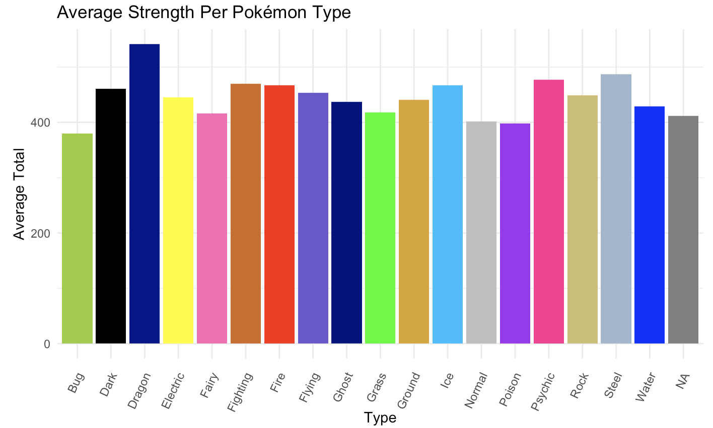
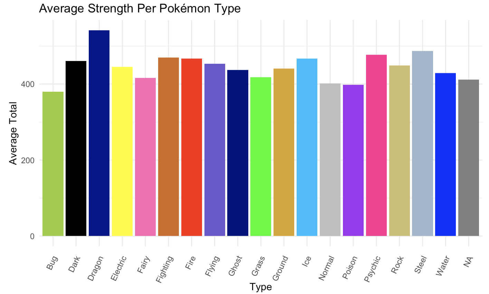

Marks
- Areas
Channels
- Position --> Both
- Represents attribute of categorical type.
- This is a good mapping because it follows the effectiveness principle and contributes to how digestible the visualization is. Each area is positioned relative to each other, which helps users differentiate between them and identify which one correlates to what U.S. state. Though position is not entirely what users depend on to identify the states, this channel does play a significant role in their ability to do so. Additionally, the positioning of the states aligns with how they are objectively arranged geographically.The positioning of the states also does not majorly interfere with other channels. Hawaii pops out in terms of positioning since its separated from the other states on the map, but the use of hue overrides this effect. Finally, while some states may be grouped together based on region, this effect is also appropriately overridden by the use of hues. The expressiveness principle is also followed because the way the information is shown does not imply an ordering exists among the categorical attributes. Hence, the states are correctly interpreted as categorical data.
- Shape
- Represents attribute of categorical type.
- This is a good mapping because it plays a major role as to how well users are able to distinguish between each area and identify the state it represents, which shows how this channel follows the effectiveness principle. Each state is clearly distinguished by the unique shapes they yield. It helps that these shapes align with common knowledge people have regarding a state's geography (i.e. knowing Lousiana has a boot shape). Since the shape's borders are clearly marked and no shape closely resembles another, each state is very differentiable. The shaping of the states does not overtly interfere with other channels. States like Texas, which has a unique L-shape, may pop out from the other states due to its size, but the colors on the plot detract this effect's impact. Some states may also be grouped based on size, but this information is appropriately overriden by color. The expressiveness principle is followed as well because the way the information is shown does not imply an ordering exists among this categorical attribute. The states are correctly perceived as strictly categorical data.
- Color (Hue)
- Represents attribute of categorical type.
- This is a good mapping because hue helps users clearly identify which party each states' electoral votes would have went to, which is the main data that the visualization is trying to convey to users. The visualization uses two distinct colors to represent each party, which shows that both the effectiveness and expressiveness principles are followed. Semantically, Democrats are psychologically associated with blue while Republicans are associated with red, so the color choices make sense. This channel exists sufficiently independently of others. The only state that pops out due to the color channel is Nebraska, which contains both red and blue. We believe this finding to be interesting and hence appropritaely popped out. Furthermore, the two distinct colors very clearly group the states into two categories: those of which would have its electoral votes given to Clinton (blue), and those of which would have given its electoral votes to Trump (red). This color grouping dominates other groupings suggested by other channels. Considering that one of the main intents of the visualzation is to help users discover which states would have given its electoral votes to Clinton or Trump if the voting population was solely female, this grouping effect is justifiable. Furthermore, the way the data is shown does not imply an ordering exists among this categorical attribute. The states are again correctly portrayed as categorical data.
Colormap(s)
- Categorical
- Represents attribute of categorical type (Clinton or Trump).
- This is a good mapping. The colors used in this visualization are of similar saturation and value, but are perceptually distant. From this, users can see that there are two distinct categories (states that would have provided its electoral votes to Clinton against those that would have provided them to Trump) that the visualization is focusing on. No illusions are created via saturation, mark typing and sizing, simultaenous contrast, or the Von Bezold Spreading Effect.
Marks
- Points
Channels
- Position --> Both
- Represents attribute of ordered (quantitative: diverging for launch angle and sequential for exit velocity) types.
- This is a good mapping. Each point has two corresponding attributes: launch angle and exit velocity. In this visualization, the creator was able to use both horizontal and vertical positioning of the point to clearly and efficiently display these attributes. Additionally, it shows that some sort of order does exist based on each point's horizontal and vertical position relative to other points. Thus, the exit velocity and launch angle data are most likely to be correctly interpreted as quantitative measurements. The insertion of markings above and below where the launch angle equals 0 emphasizes that the launch angle is a diverging attribute. The positioning also makes logical sense: points below the middle of the plot symbolize negative launch angles while those above represent positive launch angles. Additionally, points further to the right of the plot have higher exit velocities. The x and y axes are scaled evenly, enabling us to make perceptual judgements of a batted ball's launch angle and exit velocity that closely match the objective measurement. The positioning sufficiently avoids interference with other channels. The positioning of the points does not make any points pop out, but usually color compensates for this effect if necessary. With the help of annotated markings distinguishing ground balls, line drives, fly balls, pop-ups, and home runs, the positoning helps to contribute to the noteworthy groupings in this data set. As a result, both effectiveness and expressiveness principles are followed.
- Color --> Saturation + Hue
- Represents attribute of ordered (ordinal, diverging) type.
- This is a questionable mapping. Though the different shades of points do help to display the varying levels of angles and velocities, points do overlap each other so it is hard to distinguish each of them and their respective values. Therefore, the points are not very discriminable. However, it makes sense logically for darker colors to represent extremes in the dataset (below or above average scoring values) and for lighter ones to represent values closer to the average. Our perceptual judgment of the scoring value a point represents could hence agree with an objective measurement of it. The colors don't really interfere much with other channels, but the dark orange blob on the plot effectively pops out the points symbolizing home runs, helping to accentuate the ideal "sweet spot" combination of launch angle and velocity for baseball enthusiasts yearning to make more hun runs. Finally, the colors on the plot seem to group the data into noticeable chunks, but these chunks don't seem particularly meaningful. The only signficant chunk of color is the aforementioned orange blob representing home runs. Pop-ups, fly balls, lune balls, and ground balls are all distinctive categories that are better inferred via the positioning of the points, rather than the color. Whether the effectiveness principle home followed is questionable, but it is clear that the expressiveness principle is shown because the positioning and the saturation level/hue of the points convey an ordering exists. The distinction between below average, average, and above average scoring values is clearly interpreted as ordinal data. The white helps to clearly indicate whether a value is average, helping to emphasize the data is divergent.
Colormap(s)
- Divergent
- Represents attribute of ordered divergent type (range from below to average to above average limits.
- This mapping is good because ordered divergent attributes are best represented by divergent color maps. Clearly, two colors (purple and orange) are used to represent the two extremes within the data values, which are below and above average scoring values. In theory, white would have been a good choice for representing the "average" of the data since it's a neutral color (for this visualization specifically, though, it's a poor choice of color since it blends easily with the background of the visualization and could be misinterpreted as "no data" rather than "average data." No illusions are created via saturation, mark typing and sizing, simultaenous contrast, or the Von Bezold Spreading Effect.
Marks
- Lines
Channels
- Position --> Both
- Represents attribute of categorical (horizontal spacing) and quantitative (vertical spacing) type.
- This is a good mapping because it makes use of both vertical and horizontal spaces to clearly display the two attributes of the data. The vertical spacing logically makes sense: the taller a bar, the greater the average total of a certain Pokémon type. Hence, the use of a vertical axis that allows one to perceptually measure each bar on a common scale allows one to effectively compare the Pokémon type's average totals, which are quantitative data. Furthermore, the bars are scaled effectively and match human perceptual judgement to the objective measurement of an average total. The levels of the channel are clearly discriminable due to how vastly different the colors of each bar are how the scaling of the y-axis makes it easy to distinguish the differences in height across each bar. The channels exist independently of others as position and hue are fully separable. The colors of each bar have the same level of saturation, so no bar visually pops out, which isn't really necessary for interpreting this bar chart. Perhaps some people might erroneously group certain Pokémon types together if they are represented by bars of similar colors, but the annotations on the horizontal axis clear up confusion on that matter. The Pokémon's type, a categorical attribute, is used to disperse the bars along the horizontal axis. Perceptually, the horizontal spacing of the different categories of Pokémon type are a good way to express categorical data. Thus, both principles of effectiveness and expressiveness are followed.
- Color --> Hue
- Represents attribute of categorical type.
- This is a good mapping because each hue is used to represent a different category (Pokémon type), which helps users to be able to quickly identify each bar and understand that there is no existing ordering. Hue is a strong way to exhibit categorical data. Furthermore, this bar chart matches types with colors that semantically seem aligned. For instance, water types are logically symbolized in a blue bar, fire types are logically represented in a red bar, and grass types are logically represented in a green bar. This follows both the principles of effectiveness and expressiveness.
Colormap(s)
- Categorical
- Represents attribute of categorical type.
- This is a good mapping because the colors used are of different hues but similar saturation and luminance. As a result, it is clear that only one attribute (different categories of Pokemon) is being conveyed. Additionally, it is easy to distinguish between all categories. No illusions are created via saturation, mark typing and sizing, simultaenous contrast, or the Von Bezold Spreading Effect.